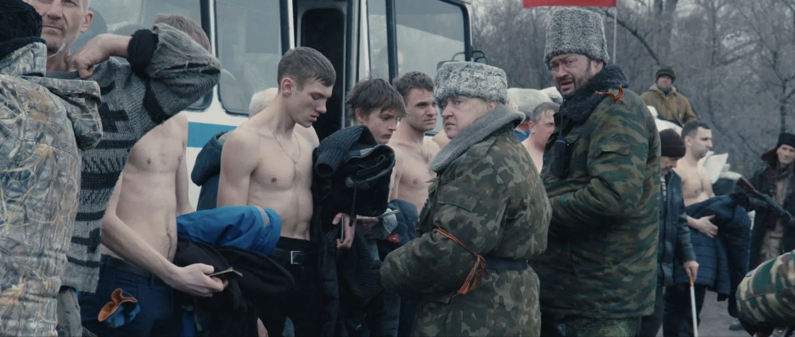

Giorgio Agamben, an Italian philosopher, contends that the reduction of life to 'biopolitics' is one of the main threads of Western modernity. Agamben examines the conception of a homo sacer, the being reduced to 'bare life', that is, a bilogical exsitence of a human deprived of any rights. Agamben notes that bare life refers then to a conception of life in which the sheer biological fact of life is given priority over the way a life is lived, by which Agamben means its possibilities and potentialities. In her article "Russia’s Quiet Other: Dmitrii Mamuliia’s Another Sky and Aleksandr Kott’s The Test," Elina Sattarova discusses Russian films where non-Russian characters are reduced to bare life and silenced as actors in the narrative.
Sergei Loznitsa's film Donbass (2018) visually enacts Agamben’s homo sacer by showing how war and political collapse strip people down to bare life — vulnerable, killable, yet invisible to any form of justice or legitimate power.
The distinction between war and crime dissolves. Militias, politicians, gangsters, and civilians all participate in a system where might makes right. In Agamben's language, the "state of exception" (where normal law is suspended) becomes permanent, turning people into homo sacer — expendable, killable without consequences.
Individuals lose legal protections. Civilians, prisoners, and even soldiers are reduced to bare life. People are humiliated, lynched, or killed in public rituals (like the man accused of being a Ukrainian saboteur tied to a pole and beaten by random passersby). There's no due process; no sovereign guarantees rights — only arbitrary power.